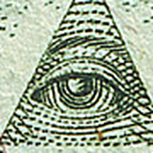

Before anything else
A poem, written before any of the argument that follows. It comes first because everything after it is really just an attempt to explain what's already happening in it.
It seemed to me a chessboard of kings,
Set in black and white.
But I lingered at that table for a truly long time,
Rooted in place; I was but a pitiful pawn.
Countless hands covered my eyes.
And left me in the game.
He did not let me helplessly fade away.
Even when I howled at Him like a beast,
God did not strike me down.
His compassion for me only deepened.
God did not condemn me for my irreverence.
Instead, He stepped beside me and wept.
For God is always, infinitely good;
He never once averted His gaze from the board.
He knew precisely the place of the piece He Himself had set.
What This Is, In Plain Language
Every civilization has produced a version of the same warning: the people who run things are rarely visible, and the truest form of power is exercised quietly. This page argues something more specific than that. The old vocabulary of demons, egregores, and mystery schools was never really about the supernatural — it is a working diagram of how institutions behave once they grow past the point where any one person can see the whole of them. Read that way, Ephesians' "powers and principalities" and a modern agency's organizational chart are describing the same mechanism from two different centuries.
None of this requires believing in a literal conspiracy — that word implies a small group secretly coordinating toward a shared goal, and most of what follows is the opposite: a machine-like, apathetic process that produces the same effects without anyone needing to coordinate anything. Read narrowly, it is a study of institutional psychology: how systems accumulate a will of their own, how responsibility gets diffused across a bureaucracy until no single person carries it, and how individuals cope — psychologically and spiritually — with seeing that machinery clearly for the first time. Read esoterically, it is a map of two forces that mystics, Gnostics, and occult philosophers have symbolized for centuries as an Eye and a Hand.
The All-Seeing Eye
Total, impartial visibility. Originally a warning to the powerful that they too are watched — the Eye of Providence hovering over the Great Seal's pyramid, unclaimed by any single ruler. In modern surveillance systems the symbol gets inverted: the same total visibility, now aimed downward, turned into a tool the powerful use to watch everyone else while staying hidden themselves.
The Hidden Hand
Action taken invisibly. In portraiture, calm statesmanship — the hand tucked into a waistcoat. In statecraft, covert action structured for plausible deniability, like France's disguised arms shipments to the American Revolution. In esotericism, the Rosicrucian discipline of a will exercised without needing credit: to know, to will, to dare, and to keep silent.
Powers & Principalities
Ephesians 6:12's term for the forces behind human conflict, described as ruling "in high places" rather than in flesh and blood — read by modern theologians like Walter Wink as the "inner spirit" institutions themselves develop once they outgrow any single person's conscience or control.
The Egregore
An occult term for a collective thought-form: an entity born from a group's shared focus, which can outgrow and dominate the very people who created it.
The Undying Worm
Biblical imagery for spiritual decay, read by mystics as the gnawing, parasitic cost of feeding a system that has no divine spark of its own.
The Crowd
Kierkegaard's term for the abstraction that lets individuals dissolve their moral responsibility into a group, a policy, or "standard procedure."
Plausible Deniability
The structural result of the Crowd: when a decision is split across enough desks and committees, no single person ever has to own the outcome — whether in a covert operation or an ordinary bureaucracy.
Institutional Gaslighting
What happens when the same diffusion of responsibility gets pointed at one person's documented reality — denying records, redirecting blame, until the individual starts doubting their own memory instead of the system.
Archons & the Demiurge
In Gnostic scripture, the "rulers" of the material world — cosmic wardens serving a lesser, ignorant creator god — whose entire function is to maintain the illusion that the visible world is all there is.
The Panopticon
Jeremy Bentham's 18th-century prison design, where inmates never know if they're being watched and so learn to police themselves — later used as the model for modern institutional surveillance.
Ontological Shock
The disorientation of a worldview collapsing all at once — Plato's prisoner blinded by sunlight, Neo unplugged from the Matrix, Alice down the rabbit hole.
Novus Ordo Seclorum
The Great Seal's second motto, "a new order of the ages" — designed by a Franklin/Jefferson/Adams committee in 1776 and printed on the dollar bill since 1935, thirteen letters deep, echoing the thirteen states above the pyramid.
The poem this page opened with doesn't use any of the words above, but it's describing the same thing: a small piece on a board much larger than itself, blindfolded by "countless hands," and seen anyway. A few lines, read back against the vocabulary just introduced:
Every one of those glosses is unpacked at full length below — starting with the worm, and ending with the sources.
ACT I — THE NATURE OF THE BEAST
The Undying Worm & the Powers of the Air
The Bible never says outright that "demons are worms." But it repeatedly uses worm-imagery for spiritual ruin. The most cited verse is Mark 9:48, quoting Isaiah 66:24, describing a state of decay "where their worm does not die, and the fire is not quenched."
Two readings of the worm
The Ouroboros — an alchemical symbol of a cycle that consumes and renews itself with no external end point. Read against the Undying Worm above, it's the same warning drawn as a single unbroken shape: a parasitic loop doesn't need new victims to keep running, only for the same host to keep feeding it.
Ephesians 6:12 — the actual verse
"For we wrestle not against flesh and blood, but against principalities, against powers, against the rulers of the darkness of this world, against spiritual wickedness in high places."
Esoteric and theological readers alike treat this as the single most important line for understanding how the world is actually governed: our real conflicts are rarely with people. They are with systems, structures, and the "spirit" those systems take on once they grow large enough.
Three ways this verse gets unpacked
- Gnostic Archons — In texts like The Hypostasis of the Archons, "rulers" are cosmic wardens serving a lesser, blind creator god (the Demiurge), whose purpose is to keep human souls asleep inside the material world. Functionally, an Archon and a modern administrative agency do the same job by the same method: neither needs malice to keep a person trapped, only an arbitrary, self-referential rulebook complex enough that escaping it costs more energy than submitting to it. The Archons don't have to be lying to you for the maze to work — they only have to keep building more maze.
- Egregores — In occult philosophy, a "principality" is an egregore: an autonomous psychic entity generated by a group's collective focus. A corrupt institution generates a "spirit" that eventually possesses the very people inside it. The modern occult vocabulary for this traces largely to Helena Blavatsky, the Russian émigré who co-founded the Theosophical Society in New York in 1875 and, in her 1888 The Secret Doctrine, synthesized Hindu, Buddhist, Kabbalistic, and Hermetic material into a single system that later writers — Besant, Leadbeater, and Bailey among them, all cited elsewhere on this page — built directly on top of. Blavatsky's own scholarship has been extensively criticized, including credible charges of fabricated sources; the concepts she popularized outlived the credibility of her specific claims, which is itself a small case study in how an idea's usefulness and its originator's reliability can come apart.
- Walter Wink's Institutional Reading — The 20th-century theologian argued that "powers and principalities" are the literal inner ethos of human institutions. A government or corporation isn't just physical machinery; it has a spiritual character. When that character turns oppressive, the theological claim is that you are not fighting the CEO or the official — you are fighting the spirit of greed or control animating the whole system.
Blavatsky's Theosophy
The Secret Doctrine's author, whose scholarship is widely disputed but whose vocabulary — egregores, thought-forms, the astral — outlived the credibility of her specific claims.
The worm and the Archon describe what a corrupted system is. What comes next is how it survives contact with anyone who notices — not through force, but through an architecture engineered to make sure no single hand is ever caught holding the blade.
ACT II — THE ARCHITECTURE OF EVASION
The Hidden Hand: Portrait, Statecraft, Esoteric Practice
The hand-in-waistcoat pose appears throughout 18th- and 19th-century portraiture and early photography as a signal of calm, composed leadership. It is most closely associated with Napoleon Bonaparte, painted this way repeatedly by Jacques-Louis David and Ingres — including the portrait featured at the top of this page.
France's literal Hidden Hand: the American Revolution
Long before France formally allied with the American colonies, King Louis XVI wanted to bleed the British Empire without triggering open war. He turned to Pierre Beaumarchais — playwright, spy, and arms dealer — who established a dummy trading company, Roderigue Hortalez et Compagnie. Through this front, France funneled millions of livres and tons of muskets and gunpowder to the American rebels. Because the operation was structured as a private merchant enterprise, the Crown maintained total deniability: if British intelligence uncovered the shipments, France could blame a "rogue" private vendor. This is compartmentalization and plausible deniability in its purest historical form — a state's hidden hand acting through a legally separate façade.
The court occultist as literal Hidden Hand: John Dee
If Beaumarchais and Jekyll Island are the Hidden Hand in statecraft, John Dee is closer to its esoteric ancestor made flesh: mathematician, astrologer, and personal advisor to Elizabeth I, who consulted him on everything from the optimal date for her coronation to English claims on the New World. Dee was also a serious occultist, spending years attempting to contact angels through a scryer, Edward Kelley, in sessions that produced the elaborate invented language now called Enochian. He signed his most confidential reports to the Queen with a private glyph — two circles representing watching eyes, above a stylized "7" — meant to signal that a letter was for her eyes only. That symbol, "007," is frequently cited as part of the inspiration behind Ian Fleming's James Bond designation centuries later, though Fleming himself never confirmed the connection directly. Whether or not the Bond link holds up to scrutiny, Dee himself is undisputed: a documented Renaissance court advisor whose influence on state policy was real, whose methods were explicitly esoteric, and whose personal signature was, quite literally, an eye watching in secret.
John Dee's "007"
Elizabeth I's court astrologer signed his most confidential reports with a private glyph — two watching eyes above a stylized seven — reportedly a partial inspiration for James Bond's designation.
A second case, over a century later: Jekyll Island
In November 1910, a small group of the country's most powerful bankers and one sitting U.S. senator boarded a private railcar in New Jersey and traveled to a hunting club on Jekyll Island, Georgia, to draft what would become the Federal Reserve Act. The secrecy wasn't rumor — it was deliberate and later openly admitted by participants. Attendees reportedly went by first names only and avoided being photographed together to keep reporters from connecting them to a single coordinated plan; National City Bank president Frank Vanderlip wrote decades afterward, in his own memoirs, that he "was as secretive — indeed as furtive — as any conspirator" during the trip. The resulting legislation passed Congress three years later in far more ordinary, public form. Whatever one concludes about the Federal Reserve itself, the meeting that shaped its first draft is a rare case where the architecture of this entire page — quiet men, a legally deniable cover story (an ordinary duck-hunting trip), and information deliberately kept off any public record — is confirmed by the people who did it, not alleged by people outside it.
A name collision worth untangling: Adam Smith's "invisible hand"
It's worth being precise here, because the phrase gets confused constantly. Adam Smith used "an invisible hand" exactly once in The Wealth of Nations — published, coincidentally, in 1776 — to describe how individuals pursuing their own self-interest in a free market can, without intending to, produce outcomes that benefit society broadly. Smith's invisible hand is not secret, not coordinated, and not an agent at all; it's a metaphor for an emergent statistical pattern with no one steering it, closer to the "necessity, not conspiracy" argument made elsewhere on this page than to anything covert. The esoteric and covert-operations Hidden Hand this section is actually about — Beaumarchais's front company, Jekyll Island's private railcar, Dee's coded reports — involves specific people deliberately concealing a specific coordinated action. Smith's hand has no fingers to hide. Conflating the two, as popular usage often does, erases the exact distinction this whole page has been trying to draw between structural necessity and concealed intent.
Smith's Invisible Hand
Adam Smith's 1776 metaphor for self-interest producing unintended social benefit — an emergent pattern with no one steering it, not to be confused with the concealed, coordinated Hidden Hand this page is actually about.
The esoteric reading: disciplined, egoless action
If the Eye represents knowing the truth, the Hand represents how that knowledge gets applied. In esoteric traditions, real power moves quietly.
- The Master of the Second Veil — In Freemasonry's Royal Arch degree, the hidden hand ties to Exodus 4:6, where Moses conceals his hand in his cloak; withdrawn, it is leprous, restored, it is healed. The lesson: transformative power comes from an internal, hidden source, not the visible ego.
- The Alchemical Process — In alchemy, the "great work" happens in darkness, the way a seed germinates underground before it ever breaks the surface. Esoteric action, in this framing, must incubate in secrecy before it manifests.
- The Rosicrucian maxim — "To Know, To Will, To Dare, and To Keep Silent." The Hidden Hand is this vow made physical: possessing knowledge and will, but exercising the discipline to remain unseen. The ego wants recognition; the master only wants the work completed.
The four stages of the Great Work
Alchemy names the "great work" more precisely than the summary above suggests — it's a four-stage sequence, each stage traditionally assigned its own color, and each one mapping onto a distinct phase of the disciplined, silent action this section has been describing:
- Nigredo ("blackening") — decomposition and breakdown; the raw material, and the ego attached to it, has to dissolve before anything new can be built from it. This is the alchemical name for the same collapse Act IV of this page calls ontological shock.
- Albedo ("whitening") — purification; what survives the dissolution is washed clean of what it isn't. Several alchemical texts pair this stage with the ashlar teaching already covered — a rough stone doesn't skip straight to being useful, it has to be reduced before it can be reshaped.
- Citrinitas ("yellowing") — the dawning stage, associated with the first real light and with waking, rational understanding rather than raw destruction or cleansing. In the oldest texts this stage sometimes drops out entirely, folded into the final one, which is part of why modern popular accounts often describe only three stages instead of four.
- Rubedo ("reddening") — completion; base material has become the Philosopher's Stone, alchemy's symbol for the finished work, traditionally credited with the power to turn lead into gold and, in the more explicitly spiritual reading many Hermetic writers preferred, to turn a base, reactive person into a settled, sovereign one. The gold was never really the point. The finished stone is the same image as the poem's closing turn: a pawn that has crossed the board and transmuted into something the board's own rules say it's allowed to become.
Nigredo to Rubedo
Alchemy's four-stage Great Work — blackening, whitening, yellowing, reddening — ending in the Philosopher's Stone, the same image as a pawn transmuted after crossing the board.
A concealed hand at the center of the four Rosicrucian disciplines — the maxim isn't a slogan for secrecy alone; silence is only the fourth step, resting on knowledge, will, and daring.
Ten Masonic lessons, and the verses beneath them
Freemasonry teaches almost entirely through worked symbol and legend rather than doctrine, but its core lessons map directly onto everything this page has already covered — and each one has a specific biblical anchor most lodges teach alongside it.
- The rough and perfect ashlar. New initiates are shown two stones: a rough ashlar, uncut and irregular as it comes from the quarry, and a perfect ashlar, squared and smoothed for use in the temple wall. The lesson is entirely about the self — each Mason is the rough stone, and the working tools of the craft (gavel, chisel, square, level) are metaphors for the discipline that shapes a person into something fit to be built with. Masonic teaching connects this directly to 2 Corinthians 3:18, "we all, with open face beholding as in a glass the glory of the Lord, are changed into the same image from glory to glory," and to 1 Corinthians 3:16, "know ye not that ye are the temple of God." It's the same alchemical claim already covered in the Hidden Hand's "great work" — transformation that has to happen to the self before it can be trusted to happen anywhere else.
- Hiram Abiff and the three ruffians. The Master Mason degree centers on a legend, not a historical record: Hiram Abiff, Solomon's chief architect on the Temple, is confronted by three fellow craftsmen who each demand the Master's secret word by force, one at each of the Temple's three gates, and kill him in succession when he refuses each time rather than betray it. The story is entirely about what the earlier "Hidden Hand" sections called the Rosicrucian maxim under real pressure: knowledge that cannot be extracted, only earned or freely given. Luke 8:17 — "nothing is secret, that shall not be made manifest; neither any thing hid, that shall not be known" — is the counterweight lodges pair with it: the legend isn't a celebration of secrecy for its own sake, but of a form of integrity that force cannot substitute for legitimate transmission, set against the promise that everything eventually surfaces regardless.
- The checkered pavement. Most lodge floors are laid in alternating black and white tile, explicitly taught as a symbol of the duality running through human life — good and evil, joy and sorrow, light and dark, laid out underfoot as the ground a Mason literally stands on during every meeting. It is, functionally, the same image the poem centered on this page opens with, arrived at independently: "a chessboard of kings, set in black and white." Masonic teaching typically pairs the pavement with Ecclesiastes 3:1, "to every thing there is a season, and a time to every purpose under heaven" — the claim that the duality itself isn't a flaw in the design, but the necessary terrain anyone has to cross.
- Boaz and Jachin, the twin pillars. First Kings 7:21 names the two bronze pillars Solomon's craftsman Hiram set at the Temple's porch: Boaz ("in strength") on the left, Jachin ("he shall establish") on the right. Masonic lodges place matching pillars at their own entrance for the same reason the original ones stood at a threshold rather than inside the sanctuary itself — they mark the boundary a person crosses on the way from the ordinary world into a space where the usual excuses (the Crowd, plausible deniability, staged appearances) are meant to stop working. Strength and establishment, read together, are less a promise of protection than a description of what it actually takes to stand under an Eye that cannot be managed: durability, and the willingness to be founded on something that doesn't move.
- The 24-inch gauge and the common gavel. The Entered Apprentice's two working tools are the plainest in the whole system: a ruler divided into 24 equal parts, and a stonemason's hammer. Lodges teach the gauge as a lesson in dividing each day — traditionally eight hours to labor, eight to serve others, eight to rest — and the gavel as the tool that knocks off the rough, superfluous parts of a stone before finer work can even begin. Both are paired with Psalm 90:12, "So teach us to number our days, that we may apply our hearts unto wisdom" — the claim that self-discipline over ordinary time is the actual prerequisite for everything grander this page has been describing, not a separate, lesser concern from it.
- The Winding Staircase. The Fellowcraft degree describes a staircase of three, five, then seven steps, climbed by the craftsmen of Solomon's Temple to reach the Middle Chamber and receive their wages. The staircase is scriptural, not invented: 1 Kings 6:8 reads, "the door for the middle chamber was in the right side of the house: and they went up with winding stairs into the middle chamber." Masonic teaching reads the ascent as knowledge itself — each landing associated with a different body of learning — arrived at only by continued, effortful climbing rather than a single revelation. It's a physical answer to the same question Act IV of this page spends an entire section on: not whether truth destabilizes, but whether it should arrive all at once or one flight at a time.
- The plumb, square, and level. Three tools, each assigned to a lodge officer, each a moral instrument disguised as a construction tool: the plumb tests verticality and stands for rectitude of conduct, the square tests right angles and stands for morality and honest dealing, the level tests horizontal evenness and stands for equality among members regardless of outside rank. Their scriptural anchor is unusually direct: Amos 7:7–8 shows God standing "upon a wall made by a plumbline, with a plumbline in his hand," measuring Israel against it and declaring, "I will not again pass by them any more" once the nation fails the test. It is, structurally, the Old Testament's own version of an uncorrupted All-Seeing Eye: a fixed, external standard applied without negotiation, exactly the kind of static measure this page keeps arguing bureaucratic deniability can't survive contact with.
- The sprig of acacia. In the Hiram Abiff legend, a sprig of acacia marks the location of his hastily dug grave and is later used by searchers to find and raise the body. Masonic teaching reads it as a symbol of the soul's immortality — evergreen, planted at the point of apparent defeat, marking the site of eventual restoration rather than final loss. It's typically paired with John 11:25, "I am the resurrection, and the life: he that believeth in me, though he were dead, yet shall he live," and with 1 Corinthians 15:52's promise that "the dead shall be raised incorruptible." Read against this page's central poem, it's the acacia sprig that answers the poem's own closing turn — the pawn who survives the crossing doesn't just endure the board, something in the crossing itself is built to outlast it.
- The Square and Compasses. The single most recognized Masonic emblem on Earth is also the one this page had, until now, only mentioned in passing. The square — a flat, right-angled tool — represents matter, morality, and the bounded, measurable physical world: honest dealing, squared conduct, a life kept within known limits. The compasses — hinged, able to open outward without limit — represent spirit, aspiration, and the boundless: the discipline of circumscribing one's own desires within due bounds, rather than the discipline of staying flat. Many American lodges place a letter "G" between the two, read simultaneously as Geometry (the discipline both tools serve) and God (the Grand Architect this entire page keeps returning to). The symbol's scriptural root is more literal than most: Proverbs 8:27 describes Wisdom present at creation "when he set a compass upon the face of the depth" — an actual compass, in an actual act of measured, deliberate construction, laid directly into the founding vocabulary of Genesis-adjacent scripture centuries before any lodge existed.
- The Rosy Cross. Where the Square and Compasses is Masonry's public face, the Rosy Cross belongs to its more explicitly mystical, Rosicrucian-influenced degrees (notably the Scottish Rite's 18th, the Knight of the Rose Croix) — a cross with a rose blooming at its center, sometimes with the rose itself unfolding through red and white petals in a clear echo of the alchemical Albedo-to-Rubedo sequence already covered above. The image reads plainly once named: suffering, represented by the cross, does not get bypassed or denied — the rose grows directly out of its center, not instead of it. Isaiah 35:1 supplies the scriptural version of the same claim: "the wilderness and the solitary place shall be glad for them; and the desert shall rejoice, and blossom as the rose." Both symbol and verse are making an argument neither the Undying Worm nor the Ontological Shock sections quite state outright: the point was never to escape the difficult terrain, but for something to bloom directly out of having crossed it.
The Rough Ashlar
The unworked stone every initiate begins as — a Masonic image for the self-discipline that has to happen before a person can be trusted to build anything larger.
The Checkered Pavement
The black-and-white lodge floor teaching human duality underfoot — the same chessboard image this page's poem opens with, arrived at independently.
The Winding Staircase
Three, five, then seven steps to the Middle Chamber, straight from 1 Kings 6:8 — knowledge reached only by continued climbing, never in a single leap.
Plumb, Square & Level
Three lodge officers' tools doubling as moral instruments — rectitude, honesty, and equality — anchored in Amos 7:7-8's plumbline that God will "not again pass by."
The Sprig of Acacia
Marking Hiram Abiff's grave in Masonic legend — a symbol of the soul's immortality, paired with John 11:25's promise of resurrection.
Square & Compasses
Freemasonry's most recognized emblem — matter and spirit, bounded conduct and circumscribed aspiration — rooted in Proverbs 8:27's literal compass "upon the face of the depth."
The Rosy Cross
A rose blooming at the center of a cross — suffering not bypassed but bloomed directly out of, paired with Isaiah 35:1's desert made to blossom.
The square (matter, bounded conduct) and the compasses (spirit, circumscribed aspiration), with the "G" read simultaneously as Geometry and God — Freemasonry's most recognized emblem, and the one symbol this page had left unexplained until now.
Three, five, and seven steps — the Fellowcraft's winding staircase from 1 Kings 6:8, read as knowledge reached only by continued climbing, never in a single leap.
The waistcoat pose: a symbol conspiracy culture read backward
It's worth being precise about what the hand-in-waistcoat gesture actually meant to the people using it. Portraitists and their sitters in the 1700s were drawing on classical rhetorical manuals, which taught that an exposed, gesturing hand looked theatrical and untrustworthy in a formal portrait — a tucked hand signaled composure, restraint, and gentlemanly self-command, nothing more occult than good manners. The gesture became genuinely widespread: painters used it as a default solution for "what do I do with the sitter's hand," which is exactly why it shows up on so many unrelated statesmen, merchants, and clergy across two centuries. Conspiracy culture's reading — that the pose signals hidden membership in a secret order — inverts the historical record rather than describing it. The more interesting esoteric content isn't in the gesture's origin; it's in the older biblical and alchemical material later occult writers layered onto it, which is what the sections above actually draw from.
ACT II — THE ARCHITECTURE OF EVASION
The Crowd, Plausible Deniability & the Administrative State
If Egregores and Archons describe why systems act like living things, Søren Kierkegaard supplies the mechanism for how they escape accountability: a concept he called "The Crowd" (or "The Public").
Kierkegaard argued that "The Public" is an abstraction with no hands, no body, and no conscience — created by the press and social systems specifically so that people can stop thinking for themselves and dissolve into something larger and safer.
Hobbes drew the Crowd before Kierkegaard named it
A century before Kierkegaard, Thomas Hobbes gave the same idea its most literal image. The frontispiece of his 1651 Leviathan shows a crowned giant looming over the landscape, sword and crozier in hand — and on close inspection, the giant's entire body is made of hundreds of tiny individual human figures, all facing inward toward the sovereign's head. Hobbes's argument was that this fusion is exactly what a state is: individuals surrender their separate wills to an "artificial person," a Leviathan, who then acts and decides on their collective behalf. He even called this artificial person a "mortal god." It is the Egregore made explicit and diagrammed three hundred years before the word existed — a collective entity, assembled from many small people, that then looms over and governs the very people who compose it.
Le Bon: the crowd doesn't just diffuse guilt, it changes the mind inside it
Gustave Le Bon's 1895 book is literally titled The Crowd: A Study of the Popular Mind, and it makes a sharper claim than Kierkegaard's: Le Bon argued that an individual absorbed into a crowd doesn't just get to hide behind it morally, their actual capacity for independent, critical thought measurably drops — replaced by heightened suggestibility, emotional contagion, and a kind of temporary collective hypnosis. A crowd, in Le Bon's account, is dumber and more impulsive than any of the individuals composing it. The book mattered far beyond psychology: Edward Bernays, cited earlier in this page for coining "the engineering of consent," read Le Bon closely and treated his crowd psychology as raw material for professional public-relations technique. The line runs directly from Le Bon's clinical description of how crowds think, to Bernays's very deliberate instructions for how to think for them.
Milgram and Zimbardo: the Crowd measured in a laboratory
Two 20th-century psychology experiments turned everything above from philosophy into data. In 1961, Stanley Milgram asked ordinary volunteers to administer what they believed were increasingly severe electric shocks to another participant whenever an experimenter in a lab coat instructed them to continue — a majority delivered what they were told were the maximum, most dangerous shocks, not because they were cruel, but because a legitimate-seeming authority had accepted responsibility for the outcome. Milgram's own reading of his result was explicitly institutional: ordinary people will follow orders to genuinely harmful ends as long as they can locate the responsibility somewhere other than themselves, which is precisely the diffusion mechanism described throughout this section, demonstrated rather than argued for. A decade later, Philip Zimbardo's Stanford Prison Experiment assigned college students to play "guards" and "prisoners" in a mock jail — and had to be stopped after six days when the guards' behavior escalated well beyond anything the study had anticipated, seemingly because the assigned role itself, not anything about the individuals filling it, generated the escalation. Both studies have since faced serious methodological criticism, and Zimbardo's in particular is now widely regarded as compromised by experimenter influence on the participants' behavior — worth knowing before citing either as settled science. What survives the criticism is the narrower, more defensible claim both were reaching for: a role inside a system can produce behavior the same person would never choose to originate on their own.
Milgram & Zimbardo
Two mid-century experiments that turned the Crowd into laboratory data — ordinary people following harmful orders, and roles overriding the individuals assigned to them.
Fromm: why people choose the Crowd even when no one forces them to
Erich Fromm's 1941 Escape from Freedom asked the question the Crowd's critics often skip: why do people surrender their individual judgment willingly, even in societies where nothing compels them to? Fromm's answer was that genuine freedom is isolating and frightening — it hands a person the full, unshared weight of their own choices — and that authoritarian systems, mass movements, and conformist crowds all offer an exit from that weight by giving the individual something larger to submit to. Read against Kierkegaard, Fromm supplies the psychological motive Kierkegaard's philosophy mostly assumes: the Crowd isn't only imposed on people by institutions manufacturing consent from outside, it's frequently something people reach for themselves, because the alternative is standing alone under an Eye that offers no one else to share the verdict with.
Escape from Freedom
Erich Fromm's argument that people often choose the Crowd willingly — freedom is isolating, and submission to something larger relieves the weight of individual judgment.
How diffusion of responsibility actually works
Plausible deniability isn't just a political talking point — it is the load-bearing mechanism that lets a corrupted system survive without any single person carrying its moral weight.
0. The bystander effect: the same mechanism, with no institution required
Diffusion of responsibility doesn't need a bureaucracy to operate — it shows up wherever more than one person could act. In 1964, the murder of Kitty Genovese in New York was widely reported at the time as having been witnessed by dozens of neighbors, none of whom intervened or called police in time — a story that later reporting has significantly complicated and partly debunked, but which pushed psychologists Bibb Latané and John Darley to test the underlying claim directly. Their experiments found something durable regardless of the original case's accuracy: the more people who are present and aware of an emergency, the less likely any single one of them is to help, because each individual can reasonably assume someone else will act, or already has. Latané and Darley called this the bystander effect. It's the psychological seed every mechanism below eventually grows out of at institutional scale
The Bystander Effect
Latané and Darley's finding that the more people present at an emergency, the less likely any one of them is to act — diffusion of responsibility with no institution required.
1. The Division of the Decision
A legislature passes a broad mandate; an agency drafts regulations; a committee writes policy; a clerk enters data. Because the decision is fractured across many desks, nobody feels they personally made it — and everybody downstream has a plausible claim to only having handled "a minor, isolated fraction" of the process.
2. Standard Operating Procedure (SOP)
The modern equivalent of herd mentality. "I don't write the rules, I just enforce them" severs the link between a worker's individual conscience and the real-world outcome, letting "the system" absorb the guilt.
3. Strategic Silence & Administrative Friction
Unmonitored inboxes, automated phone loops, and "no-reply" addresses let a bureaucracy avoid a direct, accountable "no" from an identifiable human. When a grievance is simply left to pend, no one technically ever denied it — and no actionable paper trail exists.
4. Compartmentalization & Jurisdictional Mazes
Department A insists it's Department B's jurisdiction; Department B redirects to a third-party vendor. Every department maintains truthful-sounding deniability by claiming the issue is "outside our scope," while the actual decision-making center stays invisible.
5. The External Vendor Buffer
State agencies outsource systemic functions to private contractors. When something fails, the agency blames the vendor's software; the vendor blames the agency's vague requirements — a closed loop of finger-pointing that outsources legal liability while the citizen is left with no one to hold accountable.
Internal deniability: "double-mindedness"
Before anyone can assert deniability to an authority or the public, Kierkegaard argued they first assert it to themselves. He called this double-mindedness: knowing what's true, but deliberately looking away just enough to sincerely claim you didn't see it. It is the willful ignorance required to remain safely inside a system.
What breaks the deadlock: the whistleblower as reality anchor
A formal, documented, individually-signed-for demand acts as a miniature All-Seeing Eye: it removes the interaction from a controlled digital environment, invokes preservation-of-evidence obligations, and cites static statutory law instead of arguing with a policy manual. Once a specific person has to sign for a specific physical document, "the system" can no longer answer — a human being has to.
ACT II — THE ARCHITECTURE OF EVASION
Why Deniability Exists: Necessity, Not Conspiracy — and Where It Turns Into Gaslighting
Everything in the section above can read as an indictment. It shouldn't, entirely. Plausible deniability isn't a feature some cabal invented to escape justice — it's a load-bearing part of how any system larger than a handful of people has to function, and most of its uses are mundane and defensible. The failure worth naming isn't that deniability exists; it's what happens when the exact same mechanism gets pointed at an individual's own perception of reality.
The legitimate case for deniability
Due process
Presuming innocence before facts are established requires not collapsing every accusation into instant, personal blame — a structural presumption that protects the innocent as often as it shields the guilty.
Division of labor
No single surgeon, pilot, or engineer can personally verify every input to a decision. Delegating trust to a role, not just a person, is what makes large-scale cooperation possible at all.
Operational security
Real diplomatic, medical, and safety operations genuinely require confidentiality — a hostage negotiation or a patient's chart withheld from an unrelated party is deniability functioning correctly.
Room to self-correct
A system that instantly, publicly assigns blame for every error discourages anyone from reporting the error in the first place. Some deniability buys the time to fix a mistake before it hardens into a scandal.
None of that requires a conspiracy — a coordinated, secret plan pursued by an identifiable group toward a shared malicious goal. What it requires is closer to what Hannah Arendt described in her study of bureaucratic atrocity: ordinary people, each making locally reasonable decisions inside a role, produce a collectively harmful outcome that no one individually designed or fully intended. David Graeber's account of modern bureaucracy makes the same point about paperwork and procedure generally — the "utopia of rules" isn't sinister by design, it's what happens by default once an institution scales past the point where any one person can see the whole picture.
Where it curdles: institutional gaslighting
The same architecture that protects due process can be turned, deliberately or not, into a tool that makes an individual doubt their own documented reality. The pattern is specific enough to name:
- Denying a record that demonstrably exists — "there's no note of that call," "that policy was never in effect," said to someone holding a printout that says otherwise.
- Relocating the goalposts through the maze — every department confirms the previous department's story was wrong, so the person's account of events keeps needing revision even though nothing about what actually happened has changed.
- Treating the complainant's memory as the anomaly — "that's not how our process works" repeated by enough people, in enough offices, starts to function as evidence against the person's own senses rather than against the record.
- Silence read back as consent — an unanswered appeal is later cited as proof the person "never followed up," turning the system's own strategic silence into an accusation against the person it stayed silent to.
This is where the earlier sections converge on something clinical rather than just philosophical. Chronic exposure to this pattern produces a version of the ontological shock discussed next — except instead of a worldview collapsing all at once, it erodes gradually: a person stops trusting their own memory, their own paperwork, and eventually their own judgment, because every verifiable fact they hold gets met with calm, institutional, plural non-confirmation. Kierkegaard's "double-mindedness" is what lets the institution's individual members do this in good conscience; the person on the receiving end doesn't get that comfort; they just get told, repeatedly and reasonably, that they're the one who's confused.
Stripped of euphemism, this is the occult trick of double-mindedness performed at scale: an entire staff quietly agreeing not to see what's in front of them, until the one person who can see it starts to look like the anomaly in the room. No spell is cast. The mechanism is exactly the diffusion of responsibility described above — it's just been aimed, this time, at a single mind instead of a single decision.
The corrective isn't cynicism about every institution — it's precision about which situation you're in. Ordinary deniability answers to patience, appeal, and process. Gaslighting answers to exactly the mechanism named earlier: an undeniable, individually-signed-for, dated anchor that a diffuse system cannot quietly absorb.
Every mechanism in this Act depends on staying unseen. What happens next is the one force these systems are actually built to fear — not a rival hand, but a gaze that cannot be diffused, redirected, or made to doubt itself.
ACT III — THE INVERSION OF THE EYE
The All-Seeing Eye: Historical vs. Modern

The Eye of Providence — the eye atop the unfinished pyramid, most famously on the reverse of the U.S. one-dollar bill, motto Annuit Cœptis, "He [Providence] has favored our undertakings" — did not originally mean the leadership sees everything you do. It meant almost the opposite.
The verses the symbol is drawing on
The Eye's theology is not invented for the seal — it's assembled from scripture Masonic writers cite directly:
- Proverbs 15:3 — "The eyes of the LORD are in every place, beholding the evil and the good." The most direct textual root of the symbol: total visibility as a moral fact about the universe, not a surveillance capability held by any earthly institution.
- 2 Chronicles 16:9 — "For the eyes of the LORD run to and fro throughout the whole earth, to shew himself strong in the behalf of them whose heart is perfect toward him." Notably framed as protective rather than punitive — the eye searching for integrity to support, not primarily for wrongdoing to punish.
- Hebrews 4:13 — "Neither is there any creature that is not manifest in his sight: but all things are naked and opened unto the eyes of him with whom we have to do." The clearest possible biblical statement of the "insight, not manipulation" distinction from the Capstone section: nothing curated, nothing staged, no intermediary standing between the sight and the thing seen.
- Matthew 6:22–23 — "The light of the body is the eye: if therefore thine eye be single, thy whole body shall be full of light. But if thine eye be evil, thy whole body shall be full of darkness." This is arguably the single most important verse for this page's whole argument: it locates the capacity for illumination or darkness inside the perceiving organ itself, not in what's being looked at — the same claim Kant makes secularly with sapere aude, and the same claim Neo's literal, physical relearning-to-see makes cinematically.
- Job 34:21–22 — "For his eyes are upon the ways of man, and he seeth all his goings. There is no darkness, nor shadow of death, where the workers of iniquity may hide themselves." The most explicit scriptural rejection of plausible deniability on this entire page: no jurisdictional maze, no compartmentalization, no strategic silence provides cover from this specific kind of sight.
Thirteen rays, one triangle, one unfinished pyramid — every element of the Great Seal's reverse is a deliberate count, not decoration.
The Great Seal: who actually designed it, and the numerology of thirteen
The seal itself was six years and three committees in the making. Benjamin Franklin, Thomas Jefferson, and John Adams sat on the first design committee in 1776; the final version, adopted by Congress in 1782, was largely the work of Secretary Charles Thomson and lawyer William Barton, and it did not reach general circulation until it was printed on the reverse of the one-dollar bill starting in 1935. Its second motto, Novus Ordo Seclorum — "a new order of the ages," adapted from Virgil's Eclogues — sits beneath the unfinished pyramid, itself inscribed MDCCLXXVI (1776) at its base.
The 1935 decision has a specific, documented author, and it's a genuinely interesting one. Secretary of Agriculture Henry A. Wallace — later FDR's vice president, and a man with well-documented personal interests in Theosophy and mysticism, including an unusual correspondence with the Russian painter and esotericist Nicholas Roerich — came across an illustrated account of the Great Seal in 1934 and brought it to Treasury Secretary Henry Morgenthau Jr. and to Roosevelt himself, who reportedly liked the pyramid and eye enough to personally direct that both sides of the seal be added to the redesigned dollar bill. The eye and pyramid sat unused on paper for over 150 years before a cabinet official with genuine occult interests happened to be the one who put them into every American's pocket.
Thirteen recurs throughout the design as a deliberate count of the founding states: thirteen steps on the pyramid, thirteen letters in Annuit Cœptis, thirteen letters in E Pluribus Unum ("out of many, one" — the obverse motto, carried in the eagle's beak), thirteen stars above the eagle's head, thirteen stripes on its shield, and thirteen arrows and olive leaves in its talons. Esoteric readers have long layered numerological significance onto this repetition; the more conservative reading is that the seal's designers were simply making the founding count of states impossible to miss.
A mistranslation worth correcting directly
Novus Ordo Seclorum gets rendered in popular usage as "New World Order," and the substitution is close enough in sound and vibe that it's rarely questioned. It's wrong on every word. Novus is "new." Ordo is "order," but in the sense of an arrangement or sequence, not a governing regime. Seclorum is the genitive plural of saeculum — "of the ages" or "of the centuries," a unit of time, not a unit of territory. There is no word for "world" anywhere in the phrase; a Latin "world" would be mundus or orbis, and neither appears. The accurate translation, "a new order of the ages," is a statement about historical time — this generation marks a break from what came before it — not a claim about global governance. The phrase is adapted directly from Virgil's Eclogues (magnus ab integro saeclorum nascitur ordo, "a great new order of the ages is born"), a poem about a coming golden age, not a poem about a coming government. Whatever else this page has argued for esoterically, this particular popular reading isn't a deeper truth hiding under a mistranslation — it's just a mistranslation.
Not "New World Order"
Novus Ordo Seclorum translates to "a new order of the ages" — no word for "world" appears anywhere in the phrase.
Thirteen against thirty-three
It's worth naming the number that popular culture usually reaches for instead of thirteen: the 33rd degree of the Scottish Rite, Freemasonry's highest honorary rank, frequently treated online as the numeric key to the whole system. The two numbers aren't actually connected. Thirteen, as covered above, counts the founding states — a fact about 1776 America, fixed the moment the union was set. Thirty-three counts something else entirely: degrees of Masonic advancement accumulated by an individual member over a career, a system formalized by the Scottish Rite's constitutions in 1786 and unrelated to the Great Seal's design or its numerology. Treating the two thirteens and the thirty-three as one interchangeable "Masonic number" collapses two genuinely different counting systems, from two different traditions, into a coincidence that isn't actually there.
Jefferson's actual role, and the Bible he edited with a razor
Jefferson's specific contribution to the seal is smaller than his fame on the first committee suggests. The committee's hired Swiss artist, Pierre Eugène du Simitière, is the one generally credited with first proposing an eye motif for the new nation's seal in 1776 — though not yet paired with the unfinished pyramid, which entered the design only in 1782, under the third committee, after Jefferson was no longer directly involved. Jefferson's own 1776 committee draft leaned instead on a different image entirely: he proposed the Old Testament scene of the Israelites crossing the Red Sea, Pharaoh's army drowning behind them, with the motto "Rebellion to Tyrants is Obedience to God." Congress adopted none of the first committee's specific proposals. The eye and the pyramid that eventually won out were not, in the end, Jefferson's personal design.
What is unambiguously his is a much stranger and more direct piece of evidence about how he thought insight and belief should relate to each other. Late in life, Jefferson took a razor and a Bible — or several Bibles, in multiple languages — and physically cut out every passage describing a miracle, a resurrection, or a supernatural claim, pasting what remained into a single volume he called The Life and Morals of Jesus of Nazareth, now known as the Jefferson Bible. What survived the cutting was the moral teaching; what he removed was everything that required pistis — the reader's willingness to accept a claim on reported authority rather than direct verification. He kept the Sermon on the Mount and cut the loaves and fishes. It is, quite literally, a man taking a blade to the distinction between gnosis and pistis this page has been describing all along, and deciding which half he was willing to build a philosophy on.
This tracks with the language Jefferson chose for the Declaration itself, which invokes "the Laws of Nature and of Nature's God" and "their Creator" — the vocabulary of Deism, the Enlightenment position that a rational, distant divine architect set the universe's laws in motion and then declined to keep intervening in it. It's the same Grand Architect the Masonic tracing boards describe, arrived at independently through Jefferson's own reading of Locke, Bolingbroke, and the classical Stoics rather than through Masonic initiation — there is, notably, no reliable historical record that Jefferson was ever a Freemason himself, unlike Washington.
Synchronicity: Jung's bridge between the pattern and the shift
All of this recurring thirteen — steps, letters, stars, stripes, arrows — raises an honest question: at what point does noticing a pattern become meaningful, rather than just noticing? Carl Jung, who spent much of his later career studying alchemy and Hermetic symbolism directly (the same Emerald Tablet tradition cited above), coined the term synchronicity for exactly this problem: a "meaningful coincidence" between an inner psychological state and an outer event, connected not by ordinary cause and effect but — in Jung's phrase — by an "acausal connecting principle." Jung didn't mean mere coincidence is proof of anything mystical; he meant that the human mind is built to register certain coincidences as significant, and that this registering is itself a real psychological event worth taking seriously, whatever its ultimate cause.
Synchronicity
Carl Jung's term for a "meaningful coincidence" linked by significance rather than cause — and the honest twin question of whether a noticed pattern is insight or apophenia.
This is directly relevant to the ontological shock discussed next. People moving through that kind of destabilizing shift very commonly report a surge in noticed synchronicities — the number that keeps recurring, the symbol that keeps showing up, the sentence that lands twice in one day from two unrelated sources. Jung's own explanation leans on the same "as above, so below" correspondence this page has already traced through Hermeticism: if inner and outer reality share one underlying structure, a shift in the inner structure would be expected to produce noticeable resonances in the outer one. The more cautious, purely psychological explanation is apophenia — the well-documented cognitive tendency to perceive meaningful patterns in random or unconnected data, which spikes reliably during periods of heightened emotional arousal or belief change. This page doesn't adjudicate between those two explanations. What's worth naming honestly is that both predict the same experience: once someone starts looking for the pattern, they will find it everywhere, and the thirteen scattered across the Great Seal is exactly the kind of pattern that experience gets projected onto.
The Egyptian root: the Eye of Horus, and its six fractions
The symbol traces further back to the Eye of Horus (the Wedjat), from the myth in which Horus loses his eye in battle with Set and has it magically restored by Thoth. Esoterically, the eye becomes a symbol of protection, sacrifice, and the eternal vigilance of divine order (Ma'at) holding back chaos — but Egyptian scribes also mapped it mathematically, dividing the eye into six parts, each representing a sense or faculty, and each assigned a fraction that halves every time:
| Right of pupil | 1/2 | smell |
| Pupil | 1/4 | sight |
| Eyebrow | 1/8 | thought |
| Left of pupil | 1/16 | hearing |
| Curved tail | 1/32 | taste |
| Teardrop marking | 1/64 | touch |
The six fractions sum to only 63/64 — mythologically, the missing sixty-fourth was restored by Thoth's magic, since no measurement of the senses is ever perfectly whole.
The Masonic reading: the Grand Architect
On Masonic tracing boards, the Eye is placed above the sun and moon, representing the Grand Architect of the Universe. Its function is explicitly moral: it teaches that while an initiate can hide from the "profane," uninitiated world, their inner thoughts remain fully transparent to the Divine — a call to live virtuously in the dark exactly as one would in the light.
The standard tracing-board arrangement: sun and moon, the two visible sources of light governing day and night, positioned beneath the Eye rather than as its equal. The composition itself makes the argument — even the brightest ordinary light source is still something the Eye watches over, not something it needs.
Simone Weil: attention as the mechanism, not just the metaphor
Every tradition on this page treats the Eye as a symbol. French philosopher and mystic Simone Weil spent much of her short life arguing that the underlying capacity the symbol points to — undivided, patient attention — is a real, trainable human faculty, not a metaphor at all. In her account, most of what passes for looking is actually projection: a mind so full of its own assumptions, fears, and agendas that it never really receives what's in front of it. Genuine attention, by contrast, requires emptying the self out of the way first. Her most quoted formulation ties this directly back to the religious register this page keeps returning to: "Absolutely unmixed attention is prayer." Read against everything above, Weil supplies the missing psychological instruction manual for actually becoming an Eye rather than merely admiring one as a symbol — and a partial answer to why the true, uncorrupted Eye of Providence was never described as clever or powerful, only as attentive without interruption.
Simone Weil's Attention
"Absolutely unmixed attention is prayer" — the philosopher who argued undivided attention is a trainable faculty, not just a metaphor for the Eye.
The modern inversion: the Panopticon
As administrative states grew more technologically capable, the symbolism flipped. Philosopher Jeremy Bentham designed the Panopticon — a circular prison where guards sit in a dark central tower and inmates occupy illuminated cells around the perimeter. Because inmates can never see into the tower, they must assume they are always being watched, and so begin to police their own behavior.
Michel Foucault later applied this architecture to the modern bureaucratic state in Discipline and Punish: the dynamic has fully reversed. The system now demands total visibility of the citizen while keeping itself hidden inside the dark tower of compartmentalized offices, vague policy, and unaccountable committees.
Max Weber gave this the same shape from a different angle a generation before Foucault: he described modern bureaucratic rationalization as an "iron cage" — a system of impersonal rules that starts as a tool for efficiency and ends up as a self-perpetuating structure that governs the people who supposedly run it. And Friedrich Nietzsche, writing before either of them, argued that once a genuinely external, watching authority is gone — his famous "God is dead" — human beings don't stop needing to be watched; they simply turn the watching inward, becoming their own harshest judge and jailer. Read together, the sequence is: an external Eye that judges (Providence) → an external Eye that merely disciplines (the Panopticon) → an internalized Eye that needs no tower at all, because the subject now polices themselves without being told to.
watches the powerful
Bentham, 18th c.
watches the citizen
Nietzsche's self-surveillance
ACT III — THE INVERSION OF THE EYE
The Missing Capstone: Pharaoh, the Priesthood, and a Pyramid Left Unfinished on Purpose
Look again at the pyramid on the Great Seal, and one detail is easy to read past: it has no top. The Eye floats above it, separated, resting where a capstone should be. That absence is the whole argument of this section in miniature, but it only makes sense once you know what a finished pyramid's capstone actually was, and what it was built to do.
The pyramidion: an engineered sunrise
Ancient Egyptian pyramids were originally capped with a small, separate stone called a pyramidion, often sheathed in gold, silver, or electrum (a natural gold-silver alloy) and set while the rest of the pyramid was still faced in polished white limestone. At sunrise and sunset, that gilded tip caught the light before anything else in the landscape did and threw it back across the desert — a literal, engineered special effect, designed so the pyramid's summit appeared to glow with the sun itself. This was not decoration. It was doctrine made visible: the capstone represented the benben, the primordial mound on which the sun god Ra/Atum was believed to have first stood at the moment of creation, and its light was read as proof that the sun's own power touched the earth at that exact point.
A living god, managed by unseen hands
The pharaoh standing beneath that capstone was not considered a representative of the divine — in Egyptian state theology he was divine, the living incarnation of Horus in life and of Osiris in death, the single node where a god's authority entered the human world. But the day-to-day machinery around that god-king tells a more familiar story. Pharaoh's public appearances, audiences, and decisions were staged and mediated by a dense apparatus of priests, viziers, and court officials who controlled what he saw, smelled, heard, and was told. Temple ritual used carefully prepared incense (kyphi, frankincense, myrrh) to fill audience chambers with scent believed to summon the presence of the gods — and which also, as a simple physiological fact, altered the mood and suggestibility of everyone breathing it. Ritual dancers, musicians, and choreographed processions built a controlled sensory environment around the pharaoh's every public moment. Access to him was gated entirely by the priesthood: petitioners, information, and even which gods' will was reported to him passed first through advisors whose own power depended on remaining indispensable — and invisible.
None of this required Pharaoh to be lying about his divinity, or the priesthood to be cynically faking belief. Egyptologists generally read the system as functioning in good faith on all sides — genuine devotion, not conscious fraud. But functionally, it is the oldest documented version of the Hidden Hand this page describes: a visible, radiant, apparently supreme authority at the top of a structure, whose actual inputs — what he perceived, and therefore what he decided — were curated by people standing just out of frame.
The vizier, and the wisdom literature that trained him
The single most powerful of those unseen hands had a title: the vizier (Egyptian tjaty), effectively Pharaoh's prime minister, who supervised the treasury, the courts, and the flow of every petition and report that reached the throne. Egyptian civil servants were trained on texts explicitly built for this kind of mediating role — the Instructions of Ptahhotep, one of the oldest surviving pieces of wisdom literature anywhere, is framed as an aging vizier's advice to his successor on exactly the skills this page keeps describing: discretion, timing, and the management of what a superior is told and when. The role wasn't secret or scandalous; it was formal, textbook, and taught. The Hidden Hand, in Old Kingdom Egypt, had a job description.
The Vizier
Pharaoh's prime minister, trained on wisdom texts explicitly built for managing what a ruler sees and hears — the Hidden Hand as a formal, textbook job description.
Akhenaten: the one Pharaoh who tried to fire the priesthood
The clearest proof of how entrenched this mediating structure was comes from the one ruler who tried to remove it. Around 1353 BCE, Akhenaten abolished the traditional pantheon and its enormous, wealthy priesthood of Amun, replacing it with exclusive worship of the Aten — the sun disc itself, worshipped directly, with Akhenaten and his queen Nefertiti positioned as the only intermediaries between the god and the people. He built an entirely new capital, Amarna, specifically to physically escape the existing priestly infrastructure and its accumulated power at Thebes. It was, in the vocabulary of this page, an attempt to seize the mediating role rather than dismantle mediation itself — trading a diffuse priesthood for a single, personally controlled bottleneck. The reform didn't survive him. Within a few years of his death, his successors — Tutankhamun prominent among them — reversed the religious changes completely, restored the old priesthood's estates and authority, and had Akhenaten's monuments defaced and his name struck from later king lists. The old mediating structure had been disrupted for less than two decades before it re-asserted itself in full.
Akhenaten's Failed Reform
The one Pharaoh who tried to remove the priesthood's mediation entirely — reversed within years of his death, proving how entrenched the structure was.
Left: a completed Egyptian pyramid, its gilded pyramidion standing in for a god-king at the summit. Right: the Great Seal's pyramid, deliberately left without a human occupant at the top — the Eye hovers over the gap instead of sitting in it.
Why the American seal's pyramid has no one standing on it
This is very likely not an accident of design, and it is one of the more genuinely defensible pieces of esoteric reading on this whole page. A pyramid was, by 1782, an internationally legible symbol for a completed, hierarchical state with a divine ruler fixed at its peak. The Great Seal's committee builds the same structure — thirteen courses, ancient, monumental — and then pointedly refuses to finish it. No pharaoh, no king, no single human authority occupies the top. In their place: an eye that belongs to no one in particular, watching from a position no living person can stand in. Read this way, the missing capstone isn't a gap to be filled by a future strongman; it's the argument itself, built directly into the architecture — a state whose founders had just fought a war against a king literalizes, in stone, the refusal to replace one god-king's capstone with another.
The Rotunda & the Open Lawn
Jefferson's University of Virginia was built with no south end — a library modeled on the Pantheon standing where a chapel usually would, and a Lawn left deliberately unfinished for nearly a century.
Not manipulation, but insight: what actually replaced the capstone
It's worth being precise about what kind of thing was put in the capstone's place, because it isn't a neutral swap. A pharaoh's gilded pyramidion was an object that could be curated — a physical thing the priesthood could polish, position, and stage-manage to produce a desired effect on everyone looking up at it. The Eye of Providence cannot be curated in the same way. It has no priesthood standing behind it, no incense chamber, no advisors filtering what it perceives before it perceives it. Where the pharaoh's summit represented managed appearance — power that had been shaped for public consumption before the public ever saw it — the Eye represents the opposite claim entirely: unmediated insight, a form of seeing that exists prior to and independent of anyone's staging.
This is the actual esoteric content of the swap, and it's a genuinely different claim than "the founders replaced one authority with another, secret one." A managed pharaoh and an unmanaged Eye are not the same kind of occupant wearing different clothes — one is an image built by intermediaries for others to trust, and the other is the specific philosophical rejection of the idea that trust should ever again require an intermediary. Kierkegaard's coram Deo makes exactly this argument in a different vocabulary: standing before God strips away every layer of stage management precisely because the thing doing the seeing cannot be lobbied, briefed, scented, or flattered. Put the two images side by side and the seal isn't just missing a king. It has replaced the entire category of "authority that can be managed" with a category that structurally cannot be.
Washington's refusal, Napoleon's coronation: the same decade, the opposite choice
The clearest test of which kind of summit a state actually wants sits in two real, well-documented events barely a generation apart. In 1783, with the war won and the Continental Army unpaid and restless, a group of officers circulated what historians now call the Newburgh Conspiracy — a plan that some read as an invitation for George Washington to seize power as a military strongman, possibly even as king. Washington's response was to appear before his officers, put on a pair of reading glasses he rarely wore in public, and say simply that he had grown gray, and nearly blind, in service to his country. The gesture, and the plea that followed, dissolved the plot. He would decline supreme power again fourteen years later, walking away from the presidency after two terms when nothing but his own precedent required it. In the vocabulary of this page: offered the capstone, twice, Washington left the pyramid open.
Napoleon Bonaparte made the opposite choice with unmistakable theater. At his coronation in Notre-Dame on December 2, 1804, with Pope Pius VII present specifically to perform the anointing, Napoleon took the imperial crown from the altar and placed it on his own head with his own hands, before crowning his wife Joséphine in turn. Historians still debate exactly how premeditated the gesture was, but its meaning was unmistakable to everyone in the cathedral: he was declaring that his authority answered to no intermediary, not even the Church. It is the Hidden Hand turned fully visible and pointed at itself — a hand that, instead of staying concealed to preserve deniability, reaches up in full view of the world and sets its own capstone in place.
Both men, notably, sat for portraits in the same hand-in-waistcoat pose discussed earlier in this page — the same gesture of composed statesmanship, worn by a man who refused the crown and by a man who crowned himself. The pose reveals nothing about the choice underneath it; it's a reminder that the same outward symbol of restraint can sit atop either decision, which is exactly why this page keeps insisting that the visible summit and the actual seat of power are never guaranteed to be the same thing.
One real artifact connects both men and both revolutions directly. The Marquis de Lafayette — who served under Washington at Valley Forge and Yorktown and later helped storm the Bastille in Paris — mailed Washington the actual, physical key to that fortress-prison's main gate in 1790, along with a sketch of the demolished building, as a gift meant to honor the American Revolution that had inspired France's own. It hangs at Mount Vernon to this day. Lafayette went on to try to steer the French Revolution toward the same limited, constitutional endpoint Washington had achieved, and failed — he was imprisoned for years by Austrian and Prussian forces as the Revolution radicalized without him, and lived to see Napoleon crown himself over the wreckage of the republic Lafayette had tried to build. A key to an emptied fortress, sent from one revolution to another: as literal a symbol as exists for a capstone being permanently removed — and a reminder that removing one is no guarantee something won't eventually be forced back into its place.
Left: a crown outlined but never worn — declined at Newburgh, declined again at the end of two terms. Right: a crown placed and closed, by the wearer's own hand, in front of the Pope.
Further esoteric layers touching the same summit
A few adjacent esoteric threads sharpen this picture further, each already implicit in the symbols discussed above:
- The Emerald Tablet and "as above, so below." The correspondence principle attributed to the legendary Hermes Trismegistus — that the pattern governing the cosmos repeats at every smaller scale, including the human and the political — is the deep logic underneath treating a nation's seal, a pharaoh's capstone, and an individual's inner life as versions of the same architecture. This page has been making an "as above, so below" argument the entire time: the same diffusion-of-responsibility pattern in an agency's mailroom repeats in Ephesians' heavenly principalities.
- The Renaissance transmission: Ficino and Pico. The Hermetic texts this page keeps citing nearly vanished from Western Europe entirely. They survived through a specific, documented act of patronage: in 1463, Cosimo de' Medici commissioned the scholar Marsilio Ficino to stop his ongoing translation of Plato and translate the newly recovered Corpus Hermeticum into Latin first, believing (incorrectly, as later philology proved) that Hermes Trismegistus predated Plato and Moses both. Ficino's student Giovanni Pico della Mirandola went further in his 1486 Oration on the Dignity of Man, arguing that Hermetic, Kabbalistic, and Christian wisdom were three descriptions of one underlying truth — the founding gesture of exactly the synthesis this page has been making between scripture, Freemasonry, and occult philosophy throughout. Without one Florentine banking family's specific decision to fund one translation, the vocabulary this entire page relies on may not have re-entered European thought at all.
- Robert Fludd's cosmic diagrams. A generation after the Rosicrucian manifestos appeared, English physician Robert Fludd produced Utriusque Cosmi Historia (1617–21), an enormous illustrated cosmology attempting to map the "greater" and "lesser" worlds — the macrocosm of the universe and the microcosm of the human body — onto a single continuous diagram, the Emerald Tablet's "as above, so below" rendered as literal engravings with one system of proportion running through both. Fludd defended the Rosicrucian brotherhood publicly at a moment when it was already being dismissed as either fraud or fantasy, and his astronomical models were criticized sharply by contemporaries including Johannes Kepler for prioritizing symbolic elegance over observational accuracy — a genuinely useful cautionary case for a page built on pattern-reading: a diagram can be internally beautiful and coherent and still be wrong about the sky it claims to describe.
- Athanasius Kircher's wrong answer, asked in the right spirit. The 17th-century Jesuit polymath Athanasius Kircher spent decades trying to translate Egyptian hieroglyphs, publishing confident, elaborate readings of pyramid and obelisk inscriptions grounded in the same Hermetic assumption Ficino had made — that Egypt held the oldest, purest layer of divine wisdom, encoded rather than merely written. Every specific translation Kircher produced was wrong; the hieroglyphic script wouldn't be genuinely decoded until Jean-François Champollion's work on the Rosetta Stone over a century later. But Kircher's underlying instinct — that the pyramid's surfaces were saying something specific, deliberately, to whoever learned to read them — is the same instinct this page has been applying to the Great Seal's missing capstone. Worth holding both facts at once: the method can be completely wrong about its details and still be onto something real about the object it's examining.
- The Sator Square: a message that has outlasted its own meaning. Preserved in the ash of Pompeii and found carved elsewhere across the Roman world, the Sator Square is a five-word Latin palindrome — SATOR AREPO TENET OPERA ROTAS — arranged so it reads identically forward, backward, top-to-bottom, and bottom-to-top. Its letters can also be rearranged into a cross-shaped anagram of PATER NOSTER ("Our Father") twice over, with the leftover A's and O's read as alpha and omega, which has led some scholars to treat it as an early, coded Christian marker safe to carve in a still-hostile Roman world. No consensus translation of the square's plain Latin meaning exists nearly two thousand years later — competing readings range from an agricultural riddle to a magical protective charm. It's an honest, humbling companion piece to everything else on this page: a message built with genuine, verifiable structural intent, whose builders' actual purpose is now permanently unrecoverable — proof that "there's a deliberate pattern here" and "we know what it means" are two separate claims, and only one of them is always available.
- The triangle as sacred geometry. Independent of any single tradition, a triangle is simply the minimum shape that can enclose an area — three points, one field of vision. Pythagorean and later Hermetic writers treated it as a natural symbol of a first unity (or a trinity) from which multiplicity descends, which is part of why both the pyramid and the triangle around the Eye use the same form: a base of many, narrowing to one point of coherence.
- Euclid's 47th Proposition — the Pythagorean theorem, as a Masonic symbol. In Book I of Euclid's Elements, Proposition 47 proves that in a right triangle, the square built on the hypotenuse equals the sum of the squares built on the other two sides — the Pythagorean theorem, one of the oldest rigorously proven facts in mathematics. Freemasonry adopted it directly as a symbol, most visibly on the Past Master's jewel, where a diagram of three squares arranged on a right triangle sits beside the square and compasses. Masonic tradition (credited more to legend than to history) associates the proof with Pythagoras himself, framing the symbol as proof that the physical universe answers to fixed, discoverable, non-negotiable relationships — a mathematical version of the same claim the All-Seeing Eye makes theologically: some truths hold regardless of who is or isn't willing to see them. It's the same shape doing double duty across this entire page
📐— a triangle proving something eternally true underneath a triangle housing the Eye that watches for exactly that kind of truth.
Euclid's 47th Proposition
The Pythagorean theorem, adopted as a Masonic symbol — proof that some truths hold fixed regardless of who does or doesn't choose to look at them.
- Kabbalistic Ein Sof and the Tree of Life. Jewish mysticism describes the divine source, Ein Sof ("without end"), as fundamentally beyond direct human perception — it can only be approached through the ten emanated attributes (sefirot) of the Tree of Life, each one a partial, graspable reflection of something too total to be seen whole. The structural resemblance to "no human can occupy the true summit, only mediate toward it" is close enough that several 19th-century occult writers explicitly folded Kabbalistic and Masonic symbolism together. Kabbalistic tradition also reads meaning through gematria — Hebrew letters double as numbers, so any word or phrase carries a numeric value, and words that share a value are read as connected in meaning. It's the direct ancestor of the numerology already applied to the Great Seal's recurring thirteens earlier on this page, several centuries older than the seal itself.
- The historical Bavarian Illuminati. It's worth being precise here, since the word "illuminated" gets used loosely: a real secret society calling itself the Illuminati was founded by law professor Adam Weishaupt in Bavaria in 1776 — the same year inscribed on the Great Seal's pyramid, a coincidence of dates rather than evidence of connection — with the stated goal of promoting Enlightenment rationalism against clerical and monarchical authority. It was banned by the Bavarian government in 1785 and, by every serious historical account, did not survive into the 19th century in any organized form. Its name endures far beyond its actual eighteenth-century lifespan precisely because "illumination" is such a durable metaphor for exactly the concept the next section is about.
Ficino's Translation
The Hermetic texts underlying most of this page nearly vanished from Europe — they survived because Cosimo de' Medici funded one specific 1463 translation.
Kircher's Wrong Answer
A 17th-century Jesuit polymath confidently mistranslated Egyptian hieroglyphs for decades — wrong in every detail, but right that the pyramid's surfaces were saying something deliberate.
The Sator Square
A five-word Latin palindrome preserved in Pompeii's ash, deliberately structured — and whose actual intended meaning has never been definitively recovered.
Gematria
Kabbalah's practice of reading meaning through Hebrew letters' numeric values — the direct ancestor of the numerology applied to the Great Seal's recurring thirteens.
The Tree of Life's ten sefirot, each a partial emanation of a source (Ein Sof) too total to be perceived directly. Read against the missing capstone: both traditions place something unmanageable at the true summit and ask the person underneath to approach it through mediated, graspable steps rather than pretending to stand where it stands.
The 47th Proposition of Euclid's Elements, Book I — better known today as the Pythagorean theorem, and, in Freemasonry, as a symbol that some truths are fixed regardless of who is willing to look at them.
The same structure, modern dress
The pharaoh's incense and dancers have not gone anywhere; they have changed vocabulary. A modern head of state's environment is curated with comparable precision — scheduled briefings that determine what information reaches them and in what order, staff who control physical access, image consultants who manage how they are seen, and a press operation that decides which version of events becomes public. Niccolò Machiavelli wrote the first blunt operating manual for this reality in The Prince: he advised rulers to guard obsessively against flattering advisors precisely because he understood how easily a sovereign's perception of reality can be curated by the people closest to him. Edward Bernays, writing four centuries later and drawing directly on his uncle Sigmund Freud's theories of the unconscious, made the modern version explicit and unapologetic in his 1928 book Propaganda: he argued outright that "an invisible government" of public relations professionals had become necessary to manage mass opinion, and coined the phrase "engineering of consent" for what he considered a legitimate, even essential, democratic function. Antonio Gramsci, writing from prison in the same era, described the softer version of the same mechanism as cultural hegemony — a ruling class maintaining power less through force than by shaping which ideas feel like common sense in the first place, so that consent is manufactured before any argument even begins. Guy Debord pushed the diagnosis furthest in 1967's The Society of the Spectacle, arguing that authentic lived experience in modern life has been substantially replaced by curated representation — the gilded capstone is no longer a rare, sacred effect reserved for a god-king's coronation; it is the default condition of a public figure's entire visible existence, produced continuously by people who are never themselves on camera.
ACT III — THE INVERSION OF THE EYE
Built in Stone: Virginia's Own Architecture of Insight
Every idea in this section so far has been symbolic or historical. Virginia offers something rarer: buildings that were designed, on purpose, by people who held these exact arguments and had the money and authority to put them into brick and stone. Four sites, in particular, make the missing-capstone argument physically walkable.
Monticello: a house built on measured proportion instead of inherited rank
Thomas Jefferson designed and continuously redesigned his own home at Monticello for over forty years, working directly from Andrea Palladio's Four Books of Architecture — a 16th-century Italian pattern book built on the premise that beauty follows fixed mathematical ratios, the same conviction behind Euclid's 47th Proposition discussed earlier on this page. Monticello's dome was the first built on an American house, and its design deliberately avoids the two obvious models available to a wealthy Virginia planter: it isn't a European aristocratic palace, and it isn't a church. It is a private house organized entirely around Enlightenment proportion — Jefferson's own version of "Nature's God" expressed in load-bearing walls rather than in the text of the Declaration.
The Rotunda and the Lawn that was built without an ending
Jefferson's second great building is more directly on-theme than his first. The University of Virginia's central building, the Rotunda, is explicitly modeled on the Pantheon in Rome — and Jefferson placed it, by design, where a chapel would traditionally sit at the head of an American campus. There is no church at the center of Jefferson's university. There is a library, housed in a half-scale Pantheon, with the flanking "Academical Village" of pavilions and student rooms opening outward from it down the Lawn. And the Lawn itself, as Jefferson designed it, had no south end at all — it was left intentionally open, a "village of knowledge" that could theoretically extend forever rather than terminate at a wall. It stayed genuinely open for nearly a century before Cabell Hall was finally built to close it in 1898, decades after Jefferson's death. The parallel to the Great Seal's unfinished pyramid is not a stretch this page is making up: it's the same architect, the same year range of thinking, choosing the same gesture twice — refuse to cap the structure, and let an idea rather than a person occupy the position where a summit would normally go.
The Virginia State Capitol: a temple with no god in it
Jefferson's third major building, the Virginia State Capitol in Richmond, makes the same argument even more bluntly. Rather than draw on any Christian or British governmental architectural tradition, Jefferson modeled the building directly on the Maison Carrée, a nearly intact Roman temple in Nîmes, France, built to honor Augustus's grandsons around 4 CE. Jefferson had a plaster model shipped from France specifically so the proportions could be copied precisely. The choice makes a Deist argument in architectural form: the seat of Virginia's civil government is deliberately built to resemble a pagan temple rather than a church, housing the law rather than a deity — Nature's God's civic architecture, not any single sect's.
The lighthouse in Alexandria
The most literal architectural echo of this page's central symbol sits in Alexandria, Virginia, not far from where George Washington actually worshipped and held his Masonic membership. The George Washington Masonic National Memorial, completed in 1932 and funded by Masonic lodges across the country as a monument to their most famous member, was deliberately modeled on the ancient Lighthouse of Alexandria (the Pharos) — one of the Seven Wonders of the Ancient World, a tower built for the sole purpose of projecting light out across water to guide people safely home. A Masonic memorial to the man who refused a crown, shaped like a tower whose entire function was visibility rather than concealment, standing in an American city that shares its name with the Egyptian one the original lighthouse stood in: it's difficult to find a building anywhere that states this page's central argument — insight over managed appearance — more directly in its footprint.
The Lighthouse Memorial
The George Washington Masonic National Memorial in Alexandria, Virginia, modeled directly on the ancient Lighthouse of Alexandria — a tower built for visibility, honoring the man who refused a crown.
A second myth worth correcting: L'Enfant's street plan
Just across the Potomac from Virginia, Washington D.C.'s street grid gets the same treatment as the Pentagon. Pierre Charles L'Enfant, the French engineer Washington commissioned to design the capital in 1791, was in fact a Freemason, and popular map-reading exercises regularly trace pentagrams, compasses, and other Masonic symbols out of his diagonal avenues intersecting the grid — usually by drawing lines that skip streets, ignore terrain that forced changes to the plan, or connect points that require ignoring inconvenient intersections in between. L'Enfant's actual stated design intent, recorded in his own letters and reports to Washington, was considerably less occult: wide diagonal boulevards laid over a grid, modeled on Baroque European capitals like Versailles, chosen specifically for sightlines, ceremonial grandeur, and (not incidentally) for making the city easier to defend by artillery positioned at the traffic circles. Any sufficiently dense grid of diagonals crossing a grid of right angles will produce five-pointed shapes somewhere if you're willing to choose which lines to draw and which to ignore — which is the same lesson the Pentagon teaches from a different angle: the method of finding a shape and the method of proving it was intentional are two different, separable claims.
L'Enfant's Grid
Washington D.C.'s diagonal avenues, popularly read as hidden Masonic pentagrams — L'Enfant's own letters describe sightlines and artillery defense, not occult geometry.
A myth worth correcting on the way out: the Pentagon
In the interest of the same honesty this page has applied to the hand-in-waistcoat pose and Adam Smith's invisible hand, one nearby Virginia building deserves a direct correction rather than an addition. The Pentagon, across the river in Arlington, is popularly read as a deliberately chosen occult pentagram. The historical record is more mundane: the building's five-sided shape was driven by the boundaries of its original proposed site at the Arlington Farm, bounded by existing roads on five sides; when the site was later moved to the current location, the five-sided design was kept simply because the drawings were already finished and the building needed to be built quickly ahead of American entry into the Second World War. It's a useful closing case for this whole page, precisely because it runs the other direction from everything above it: sometimes a shape really is just a shape, chosen for a boring logistical reason, and the esoteric reading has to be willing to lose that argument as readily as it makes the others.
Seeing this clearly — the maze, the diffusion, the managed summit, the buildings that argue against it in stone, and the ones that mean nothing at all — is not free. Every tradition that hands someone this picture of the world also warns them what it costs to receive it.
ACT IV — THE PSYCHOLOGICAL TOLL
Why the Truth Is Rationed: Ontological Shock
Esoteric schools have always restricted who gets access to certain knowledge — not, in their own telling, to protect power, but because raw, unfiltered reality is destabilizing to an unprepared mind. This is ontological shock: the collapse of a person's foundational assumptions about how the world works.
A functioning identity rests on comforting assumptions — that the systems governing us are basically just, that our social roles are real, that the world runs on visible, logical rules. Sudden exposure to the idea that those systems are parasitic, or that identity is largely a social construct, can shatter that framework faster than a person can rebuild it. What looks like "going crazy" from the outside is often a mind with no available structure for processing what it has just seen.
Three allegories for the same event
The esoteric claim, stripped of mysticism, is a psychological one: only people who have built enough internal resilience can absorb destabilizing truths without being destroyed by them. Initiation rites, in this reading, exist to slowly dismantle a false picture of the world while simultaneously strengthening the person underneath it — so the truth becomes liberating instead of a psychological death sentence.
Why "enlightenment" and "illumination" are the same word doing two jobs
It's worth pausing on the vocabulary itself, because English has quietly kept two very different traditions under one word. "Enlightenment" names the 18th-century intellectual movement — reason, empirical method, skepticism toward inherited authority, the movement that produced the Declaration of Independence and the Great Seal itself. "Illumination" names something older and more personal: the mystical or Gnostic experience of sudden inner clarity, what Buddhist traditions call awakening and Gnostic texts call gnosis — direct, experiential knowing, as opposed to pistis, mere secondhand belief. These are not actually the same event, but they share a structure worth naming precisely: both describe a shift from operating on inherited, unexamined assumptions to operating on directly verified ones, and both use light as their central metaphor for that shift, independently, across cultures that had no contact with each other.
Immanuel Kant gave the movement's rational half its most famous one-line definition in his 1784 essay What Is Enlightenment?: sapere aude — "dare to know." Kant's argument was that most people remain in a self-imposed intellectual immaturity not because they lack the capacity to think for themselves, but because it's genuinely easier and safer to let a book, a pastor, or a physician do their thinking for them. Enlightenment, in his account, isn't the acquisition of new facts; it's the courage to use one's own understanding without needing someone else's permission or guidance to do it — which is precisely the same move Plato's prisoner, Neo, and Alice all have to make once the old authority stops being reliable.
That shared metaphor is exactly what Plato, the Wachowskis, and Lewis Carroll are all reaching for, each in their own register:
- Plato's cave is illumination in the mystical sense. The prisoner isn't reasoned out of the cave with better arguments; he is physically dragged into sunlight and has to adjust, painfully, to a category of seeing he didn't know existed. The philosopher's task afterward is closer to a Gnostic teacher's than a debate opponent's: not to win an argument, but to help someone tolerate a light they aren't yet built to look at directly.
- Giordano Bruno paid for exactly this kind of light with his life. The 16th-century Hermetic philosopher and former Dominican friar took the Hermetic "as above, so below" correspondence to its most radical conclusion — an infinite universe, populated by countless worlds, with no fixed cosmic center at all. Tried by the Roman Inquisition on charges that included his cosmology and his esoteric religious views, he was burned at the stake in Rome in 1600 for refusing to recant. His case is the clearest possible historical evidence that "the truth destabilizes the unprepared" was never a purely psychological metaphor for some traditions — for Bruno, and for the institution that killed him, it was treated as a literal, existential threat.
- The Matrix literalizes the metaphor as biology. Neo's eyes are described as never having been truly used before — his body has to physically relearn how to see once he's unplugged, which is the film making Plato's metaphor into a plot point rather than a comparison. "The Matrix" itself functions as the modern name for the Crowd, the Archons, and Kierkegaard's Public all at once: a system that requires the individual's belief (pistis — accepting the simulated world as given) rather than their direct knowledge (gnosis — perceiving what's actually generating the simulation).
- Alice's Wonderland is illumination without a villain. Unlike Neo, Alice isn't unplugged from a hostile system built to feed on her — she simply falls into a place where the rules she'd assumed were universal turn out to be local. Her version of enlightenment is closer to the Age of Reason's actual method than the other two: not a dramatic rescue, but the slow, repeated discipline of testing what she'd been told against what she can now observe for herself, and updating accordingly.
Gnosis vs. Pistis
The Gnostic distinction between direct, experiential knowing (gnosis) and secondhand belief (pistis) — the same gap separating Neo's unplugged perception from everyone still trusting the simulation.
Read together, all three describe the same shape from different angles: a shift from consensus reality (what the Crowd agrees is true) to direct perception (what the awakened individual can verify for themselves) — which is precisely the shift this page has already described happening at the level of institutions, when the Great Seal's committee declined to let any single human authority stand in for that direct light. The pyramid's missing capstone and the individual's ontological shock are the same event at two different scales: an old, curated, second-hand authority is removed, and something unmediated is left standing in its place.
Surviving the shock is not the end of the story. It's the precondition for the only move that actually changes anything: turning what was just seen into something done.
ACT V — THE ALCHEMICAL STRIKE
Connecting Every Thread
Every idea on this page is describing the same conflict through a different vocabulary: the sovereign individual, seeking truth and visibility, against the parasitic system, sustained by illusion and denial.
1. The nature of the system
A bureaucracy, corporation, or committee is never just a building with people in it — it generates its own semi-autonomous character. Esoteric philosophy names this an Egregore; scripture names it a power or principality; Hobbes drew it as a Leviathan, a giant sovereign literally assembled from the bodies of the people who compose it. Lacking any spark of its own, it survives on human energy: compliance, frustration, and the low hum of administrative friction that keeps people cycling through digital portals and unanswered inboxes.
2. The architecture that protects it
To keep feeding, the system must stay hidden. Kierkegaard's Crowd — formalized today as the modern bureaucracy — diffuses responsibility through SOP, compartmentalization, and outsourcing until the true decision-maker can never be located. This is a corrupted version of the Hidden Hand: action without a face attached to it. Structurally, some of this diffusion is genuinely necessary — due process, division of labor, operational security — which is what separates an ordinary institution from a conspiracy; it curdles only when the same architecture gets pointed at one person's documented reality until they doubt their own memory.
3. The capstone, ancient and modern
Every version of this system needs a visible peak — a Pharaoh, a monarch, a CEO, a head of state — who appears to be the source of authority while the actual inputs to that authority are curated by people standing just out of frame. The pyramidion's gilded light, the priesthood's incense, Machiavelli's flattering courtiers, Bernays's "engineering of consent," and a modern press office are the same mechanism at five different points in history: manage what the summit perceives, and you govern without ever appearing to.
4. The antidote
The system's one weakness is visibility. The original All-Seeing Eye — coram Deo — is the philosophical claim that no diffusion of responsibility is total; someone always sees the whole truth. A person who internalizes this stops arguing with the phantom limbs of a bureaucracy — the clerk, the hold music, the auto-reply — because none of those are the real decision-maker, and anchors instead in static, citable fact. Notably, the Great Seal's own pyramid puts no human being at that summit at all — the eye replaces the capstone rather than sitting on it, refusing the god-king role outright.
5. The execution
The esoteric Hidden Hand — disciplined, silent, egoless action — becomes, in this administrative context, the whistleblower's tool: consolidating a claim into one undeniable, individually-signed artifact, invoking preservation-of-evidence obligations, and citing statute instead of policy. It forces a diffuse system to collapse back down onto one accountable human desk.
Powers & Principalities
Plausible Deniability
(static truth)
(disciplined action)
And the poem, read one more time in this light, is the same map drawn from the inside: a pawn on a board built by kings, blindfolded by countless hands — who discovers, in the end, that one Eye was never part of the blindfolding at all.
The Sovereign Individual
Every tradition surveyed on this page converges on the same closing instruction, stated in different centuries and different vocabularies: don't fight the phantom limbs. Don't argue with the hold music, the auto-reply, the clerk who is genuinely only handling one fraction of the process. None of them are the decision. The only move that changes anything is stepping fully out of the Crowd, standing where nothing can be diffused or denied — under the original All-Seeing Eye — and from that single, undeniable position, forcing the whole structure to answer as one accountable thing instead of a hundred unaccountable fragments. That is the entire content of the Hidden Hand, correctly understood: not secrecy for its own sake, but disciplined, silent, exact action that lands once, on the right desk, and cannot be diffused back into the maze.
Further Reading & Sources
A categorized reading list tracing every concept above back to its origin — from foundational occult encyclopedias to the academic texts that formalized these ideas for a modern audience.
The Philosophy of the Crowd & the Individual
- Two Ages: The Age of Revolution and the Present AgeThe origin of "The Public" as a phantom abstraction that diffuses moral responsibility.
- Purity of Heart Is to Will One ThingDevelops "double-mindedness" — willful, self-directed ignorance — and the necessity of facing reality alone.
- Discipline and Punish: The Birth of the PrisonApplies Bentham's Panopticon to the modern administrative and surveillance state.
- LeviathanThe 1651 text and frontispiece depicting the state as a "mortal god" composed of its individual citizens — the Crowd literally illustrated a century before Kierkegaard.
- Economy and SocietySource of the "iron cage" of bureaucratic rationalization — impersonal rules that end up governing their own creators.
- Thus Spoke Zarathustra / On the Genealogy of MoralityThe "God is dead" argument and the account of conscience as internalized, self-directed surveillance.
- Eichmann in Jerusalem: A Report on the Banality of EvilThe classic study of how ordinary bureaucratic role-following, without coordinated malicious intent, produces systemic atrocity.
- The Utopia of Rules: On Technology, Stupidity, and the Secret Joys of BureaucracyA contemporary anthropological account of bureaucracy as structural default rather than conspiracy.
- The Crowd: A Study of the Popular Mind1895 foundational text of crowd psychology, later read closely by Bernays as raw material for public-relations technique.
- Obedience to Authority: An Experimental ViewThe 1974 account of Milgram's own 1961 experiments on obedience and diffused responsibility.
- The Lucifer Effect: Understanding How Good People Turn EvilZimbardo's own retrospective account of the Stanford Prison Experiment, including later criticism of its methodology.
- Escape from Freedom1941 study of why individuals often submit to authoritarian systems and crowds voluntarily rather than under coercion.
- The Wealth of NationsSource of the (unrelated) "invisible hand" of the market, published the same year as the Declaration of Independence.
- The Unresponsive Bystander: Why Doesn't He Help?The original 1970 research establishing the bystander effect, prompted by the reporting on the Kitty Genovese case.
Manufactured Consent & the Managed Summit
- The PrinceThe earliest blunt manual on how a ruler's perception is curated by the advisors closest to him, and how to guard against it.
- Propaganda1928 text coining "the engineering of consent" and describing an "invisible government" of public-opinion management as a modern necessity.
- Prison NotebooksSource of "cultural hegemony" — power maintained by shaping what feels like common sense rather than by force.
- The Society of the Spectacle1967 argument that curated representation has substantially replaced authentic lived experience in modern public life.
- What Is Enlightenment?1784 essay coining "sapere aude" — dare to know — as the definition of intellectual enlightenment.
Powers, Principalities & Egregores
- Naming the Powers: The Language of Power in the New TestamentThe definitive modern reading of Ephesians 6:12 as the inner spirit of institutions.
- Egregores: The Occult Entities That Watch Over Human DestinyA modern occult breakdown of collective thought-forms and their parasitic dynamics.
- The Hypostasis of the ArchonsGnostic text describing the "rulers" as parasitic wardens of the material world.
Esoteric Symbolism: The Eye & The Hand
- The Secret Teachings of All AgesThe encyclopedic reference for Masonic, Hermetic, and alchemical symbolism, including the All-Seeing Eye.
- The KybalionFoundational modern-Hermetic text on the Seven Principles, including "As Above, So Below."
- Transcendental Magic, Its Doctrine and Ritual19th-century occult classic on the "Astral Light" and the trained will.
- Morals and DogmaFoundational Scottish Rite text detailing the Grand Architect and the Eye's moral function.
- Duncan's Masonic Ritual and MonitorContains the Royal Arch "Master of the Second Veil" degree referenced above.
- Fama FraternitatisOriginal source for the ideal of invisible, disciplined benevolent action.
- Hand-in-WaistcoatTraces the pose from 18th-century statesmanship through Napoleon's portraits by David and Ingres.
- The Queen's Conjurer: The Science and Magic of Dr. John DeeCovers Dee's role as Elizabeth I's advisor, his Enochian angelic experiments, and his private "007" glyph.
- Duncan's Masonic Ritual and MonitorAlso contains the Master Mason degree's Hiram Abiff legend, the rough/perfect ashlar teaching, and the checkered pavement.
- The Craft and Its Symbols: Opening the Door to FreemasonryAn accessible overview of core Masonic symbols including the twin pillars, the working tools, and the ashlars.
Scripture Cited Directly
- Mark 9:48 / Isaiah 66:24The "undying worm," root of the Worm section's opening thread.
- Ephesians 6:12"Powers and principalities," read institutionally via Walter Wink.
- Proverbs 15:3 / 2 Chronicles 16:9The Eye's most direct scriptural roots — total, searching visibility.
- Hebrews 4:13"All things are naked and opened" — the clearest biblical statement of insight without intermediary.
- Matthew 6:22–23The single eye and the body full of light — illumination located in the perceiver, not the object perceived.
- Job 34:21–22"There is no darkness... where the workers of iniquity may hide" — plausible deniability's scriptural rejection.
- Luke 8:17"Nothing is secret, that shall not be made manifest" — paired with the Hiram Abiff legend.
- 1 Corinthians 3:16 / 2 Corinthians 3:18Individual as temple, and transformation "from glory to glory" — the ashlar teaching's scriptural anchor.
- 1 Kings 7:21Boaz and Jachin, the twin pillars at Solomon's Temple porch.
- Ecclesiastes 3:1"To every thing there is a season" — paired with the checkered pavement's duality.
- Exodus 4:6–7Moses's concealed and restored hand — root of the Royal Arch's Hidden Hand teaching.
- Psalm 90:12"Teach us to number our days" — paired with the 24-inch gauge and common gavel.
- 1 Kings 6:8The literal winding stairs to the middle chamber of Solomon's Temple.
- Amos 7:7–8God's plumbline against Israel — scriptural root of the plumb, square, and level.
- John 11:25 / 1 Corinthians 15:52Resurrection promises paired with the sprig of acacia.
- Proverbs 8:27Wisdom's literal compass "upon the face of the depth" — root of the Square and Compasses.
- Isaiah 35:1The desert made to "blossom as the rose" — paired with the Rosy Cross.
Egregores, Thought-Forms & "Loosh"
- The Secret Doctrine1888 foundational Theosophical synthesis; her scholarship is widely disputed, but the vocabulary proved durable.
- Thought-Forms1901 Theosophical text arguing thoughts are literal subtle-matter entities.
- Far JourneysIntroduces "Loosh" — emotional energy as a resource harvested from human suffering.
- Psychic Self-DefensePractical manual on institutional egregores and severing parasitic energetic attachments.
Gnosticism & the Simulated World
- The Apocryphon of JohnThe core Gnostic myth of the Demiurge (Yaldabaoth) and his Archons.
- The Gnostic ReligionThe definitive academic treatment of Gnostic alienation from the material world.
Ontological Shock & Initiation
- The Republic, Book VIIThe Allegory of the Cave — the foundational text on resistance to sudden truth.
- Simulacra and SimulationThe philosophical text that directly inspired The Matrix.
- Alice's Adventures in WonderlandRead by scholars as an exploration of arbitrary systemic authority and inverted logic.
- Prometheus RisingModern esoteric text on "reality tunnels" and "Chapel Perilous."
- Initiation, Human and SolarTheosophical account of why esoteric truth is deliberately paced during initiation.
- Synchronicity: An Acausal Connecting PrincipleThe original 1952 essay defining synchronicity and distinguishing it from ordinary causation.
- Psychology and AlchemyJung's direct study of Hermetic and alchemical symbolism as a map of individual psychological transformation.
- Gravity and GraceIncludes her core writing on attention as a trainable faculty and "absolutely unmixed attention is prayer."
- Waiting for GodFurther develops attention, affliction, and the spiritual discipline of undivided perception.
The Hidden Hand in History
- Beaumarchais and the American RevolutionHistory of Roderigue Hortalez et Compagnie, France's covert arms-supply front.
- Unlikely Allies: How a Merchant, a Playwright, and a Spy Saved the American RevolutionA detailed account of French state plausible deniability in action.
- LafayetteCovers the Bastille key gift to Washington and Lafayette's later imprisonment during the French Revolution's radicalization.
- The Creature from Jekyll Island: A Second Look at the Federal ReserveA detailed, if polemical, account of the 1910 meeting; cross-reference against Vanderlip's own memoir for the participants' first-person admission of its secrecy.
- From Farm Boy to FinancierVanderlip's own memoir, including his account of the secretive Jekyll Island trip in his own words.
The Pyramid, the Pharaoh, and the Great Seal
- The Complete PyramidsStandard reference on pyramid construction, including the pyramidion and its gilded capstone.
- Kingship and the Gods: A Study of Ancient Near Eastern Religion as the Integration of Society and NatureFoundational academic study of divine kingship in Egypt and the priesthood's role in mediating it.
- The Instructions of PtahhotepOne of the oldest surviving wisdom texts, framed as a vizier's advice on discretion and managing what a ruler is told.
- Akhenaten: Egypt's False ProphetA detailed account of the Amarna religious reform and its rapid reversal after Akhenaten's death.
- The Eagle and the Shield: A History of the Great Seal of the United StatesThe official U.S. State Department history of the seal's six-year, three-committee design process, including Henry Wallace's role in the 1935 dollar bill decision.
- His Excellency: George WashingtonCovers both the Newburgh Conspiracy and Washington's voluntary relinquishment of power after two terms.
- Napoleon: A LifeDetailed account of the 1804 self-coronation at Notre-Dame and its calculated symbolism.
- The Life and Morals of Jesus of NazarethThe "Jefferson Bible" — Jefferson's own literal excision of miracle claims from the Gospels, keeping only the moral teaching.
- American Sphinx: The Character of Thomas JeffersonCovers Jefferson's Deism, his 1776 seal committee proposal, and the philosophical roots of the Jefferson Bible.
Virginia's Architecture
- Thomas Jefferson, Architect: The Interactive PortfolioDetailed study of Monticello's Palladian design and Jefferson's architectural theory.
- The Four Books of ArchitectureThe 16th-century pattern book Jefferson worked from directly.
- Mr. Jefferson's University: The Creation of an Academical VillageCovers the Rotunda's Pantheon model and the Lawn's originally open south end, closed by Cabell Hall in 1898.
- Jefferson's Memorandum Books & Capitol correspondenceContains his direct instructions for shipping a plaster model of the Maison Carrée from Nîmes for the Virginia State Capitol.
- George Washington Masonic National Memorial: official historyCovers the building's explicit design reference to the ancient Lighthouse of Alexandria.
- The Pentagon: A HistoryThe definitive account of the building's rushed 1941 design and its site-driven, non-symbolic five-sided shape.
- Grand Avenues: A Biography of George Washington's Vision for the National CapitalCovers L'Enfant's actual design correspondence and intent, versus later pentagram map-reading claims.
Hermeticism, Kabbalah & Sacred Geometry
- The Emerald Tablet (Tabula Smaragdina)Ancient source of the "as above, so below" correspondence principle underlying most of the symbolism on this page.
- The Corpus HermeticumThe core surviving Hermetic texts, foundational to Renaissance and later esoteric philosophy.
- Giordano Bruno and the Hermetic TraditionCovers both Ficino's 1463 translation for Cosimo de' Medici and Bruno's 1600 trial and execution.
- Oration on the Dignity of ManThe 1486 text synthesizing Hermetic, Kabbalistic, and Christian thought into one system.
- Utriusque Cosmi HistoriaThe 1617–21 macrocosm/microcosm cosmology, criticized by Kepler for prioritizing symbolic elegance over observation.
- Athanasius Kircher: The Last Man Who Knew EverythingCovers Kircher's confident but incorrect attempts to translate Egyptian hieroglyphs through a Hermetic lens.
- On the Kabbalah and Its SymbolismThe standard academic study of Ein Sof, the Tree of Life's ten sefirot, and gematria.
- Perfectibilists: The 18th Century Bavarian Order of the IlluminatiA detailed history of the real, short-lived Weishaupt society, as distinct from its much longer afterlife as a cultural metaphor.
- Alchemy: Science of the Cosmos, Science of the SoulA standard modern study of the four-stage Great Work and the Philosopher's Stone as a spiritual rather than literal claim.
- The Sator Square: Doubts, Hypotheses, ContextsOverview of the competing, still-unresolved readings of the Pompeii palindrome's intended meaning.
- Elements, Book I, Proposition 47The original geometric proof of the Pythagorean theorem, and the Masonic Past Master's jewel it inspired.
Hero image: Bonaparte, First Consul, Jean-Auguste-Dominique Ingres, 1804 — public domain. Eye of Providence detail sourced from the reverse of the U.S. one-dollar bill, public domain.